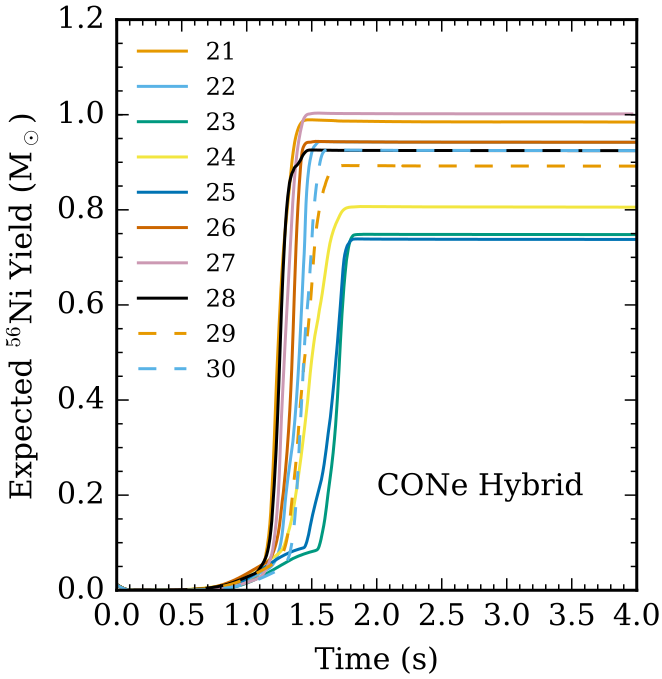

Thermonuclear Supernovae
Thermonuclear Supernovae from Hybrid White Dwarf Stars
I started out my astrophysics career simulating deflagrations and detonations in “hybrid” white dwarf stars. The typical white dwarf (WD) star is within about forty percent give or take from our own sun’s mass, made up of the elements carbon and oxygen, all compacted down to the size of our Earth. Hybrid white dwarfs are so called because they are hypothetically composed of carbon, oxygen, and neon. I wanted to discover whether runaway thermonuclear fusion in such hybrid white dwarf stars could possibly generate Type Ia supernovae.
Type Ia supernovae (SNIa) are extremely bright explosions of white dwarf stars. Yet SNIa are very rare, only occurring about twice a century in a typical galaxy. We can observe SNIa from distant galaxies, however, because in the aftermath of runaway thermonuclear fusion, the explosion of a single SNIa is briefly brighter than its entire galaxy. Astrophysicists used SNIa to measure distances to faraway galaxies and their velocities compared to our Milky Way galaxy. They found that the Universe was not only expanding but also mysteriously accelerating outwards over time, as if powered by an unknown form of energy they labeled “Dark Energy.”
But what if unexpected types of stars could undergo thermonuclear runaway and appear to be SNIa but differ in subtle ways to corrupt our measurements of the Universe’s acceleration?
Perhaps investigating this possibility will help us figure out Dark Energy.
This thinking motivated my first astrophysics research paper where I used computer simulations to estimate whether “hybrid” carbon-oxygen-neon white dwarf stars could undergo thermonuclear runaway like SNIa from pure carbon-oxygen white dwarf stars. In other words, could “hybrid” white dwarf stars produce impostor SNIa events?

I found that while the explosion dynamics from hybrid white dwarf stars were similar to explosions from typical white dwarf stars, hybrids were unlikely to generate impostor SNIa.
This might be reassuring from a cosmological perspective, but why don’t hybrid white dwarf stars explode like ordinary white dwarf stars?
I found the key explanation for this finding lies in the evolutionary history for hybrid white dwarfs. The hybrid white dwarf hypothesis requires that earlier in the lifecycle of these stars, they partially burned their carbon to produce neon. By trading carbon for neon, hybrid white dwarfs have less nuclear potential energy available to power the final, explosive thermonuclear runaway. Lower nuclear potential energy at the start of thermonuclear runaway than an equal mass carbon and oxygen white dwarf means thermonuclear runaways from hybrids will on average generate lower kinetic and radiative energy. In other words, explosions from hybrid white dwarfs will be significantly dimmer than explosions from typical white dwarfs.
For details, see Willcox et al. (2016).
For a brief overview of the scientific context for white dwarf research, see Calder et al. (2017).
Thermonuclear Supernovae From Convectively Mixed Hybrid White Dwarf Stars
I moved my primary focus to other astrophysics topics, but I still collaborated with Dean Townsley, Alan Calder, and Carlyn Augustine to advance hybrid white dwarf research. We wished to examine whether convective mixing during earlier stages of hybrid carbon, oxygen, neon white dwarf stellar history would change my earlier findings. We found that mixed carbon, oxygen, neon hybrid white dwarfs compared to carbon and oxygen white dwarfs remained likely dimmer and less energetic when undergoing thermonuclear runaway.

Our new result was largely consistent with my earlier findings, but it was still important to check thoroughly. Nuances just like this can sometimes have surprising effects.
For details, see Augustine et al. (2019).
Deflagrations from Convectively Mixed Hybrid White Dwarf Stars
More recently, Catherine Feldman followed up on our earlier hybrid white dwarf research by investigating the potential of hybrid white dwarf stars to produce dimmer Type Iax supernovae.
As before, I assisted our collaboration with explaining my original method and providing feedback to the research.
This Iax hypothesis was motivated by recognizing that all our earlier thermonuclear runaway simulations modeled our best understanding for producing bright Type Ia supernovae from single white dwarf stars. To simulate SNIa events from single white dwarf stars, we used a deflagration-to-detonation transition model to rapidly burn carbon fuel all the way to nuclear statistical equilibrium at the iron peak.
SNIa are known to produce elements as heavy as iron but not much heavier, that is to say, SNIa do not produce elements with much larger atomic mass on the periodic table of elements. This pattern is typical for thermonuclear fusion and it is a natural consequence of the exceptional stability of atomic elements around the mass of iron.
Type Iax supernovae are, however, dimmer than SNIa. If they come from white dwarf stars, then it is possible they simply did not completely burn all their initial carbon fuel to produce heavy elements. This would result in lower energy generation available to power explosive ejecta and observed radiation. Catherine wanted to find out whether the hypothesized carbon, oxygen, neon hybrid white dwarfs could explain Type Iax observations.
This time, instead of simulating explosions with a deflagration-to-detonation transition model during thermonuclear runaway, Catherine simulated pure deflagration in hybrid white dwarfs to allow for significant incomplete nucleosynthesis.

Simulations showed in most cases, deflagrations in hybrid carbon-oxygen-neon white dwarf stars produced \(\textup{Ni}^{56}\) in comparable quantities to observational inferences from Type Iax supernovae. Deflagrations in hybrids, however, tended to produce lower ejecta masses and kinetic energies than observers infer.
For complete details, see Feldman et al. (2023).